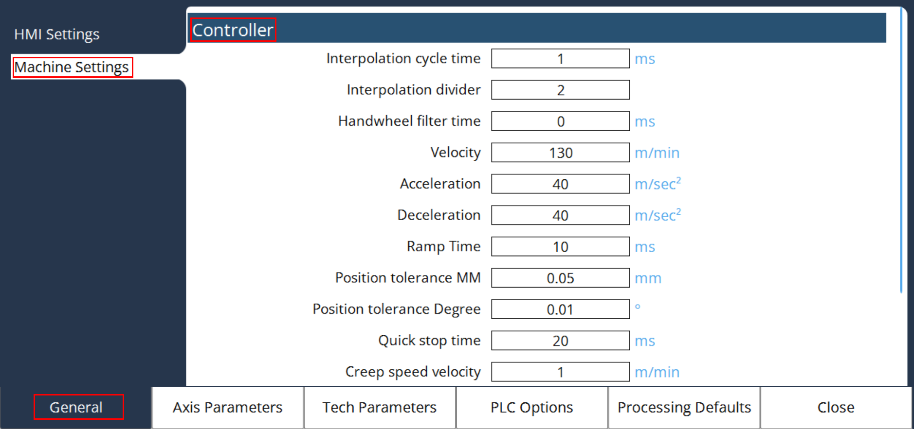

Controller
In General Parameters, Select Machine settings to access Controller settings.

MK CFG Interpolation Cycle Time
It sets the internal interpolation frequency [ms] of the controller. In each such rough interpolation cycle, the controller calculates new position values for the associated axes from the programmed path.
The shorter this cycle, the higher the density of the calculated positions. However, this also implies a higher calculating load for the controller and an increased load for drive amplifiers with digital interfaces. The EControl CNC controllers can operate with a minimum rough interpolation cycle of 1ms.
For axes with digital setpoint value interfaces, additional limits must be observed when changing this MC, depending upon the number and type of connected drive amplifiers. Please observe the drive manufacturer’s instructions.
For amplifiers with CAN interfaces, the limited bandwidth of the CAN bus transmission is of decisive significance. The following table shows the minimum coarse interpolation cycle and the average bus load with respect to the number of configured CAN axes and the set bit rate. This concerns CAN bus 2 through CAN bus 4 for the ENC66 and CAN bus 2 for all other controllers.
In calculating the bus load, only the cyclical messages are taken into account and no additionally occurring asynchronous messages from MMI or SPS. The specified value can vary slightly due to differing message lengths for different amplifiers.
Number of axes |
1000 kBit |
800 kBit |
666 kBit |
500 kBit |
250 kBit |
1 |
1 ms / 29% |
1 ms / 36% |
1 ms / 43% |
2 ms / 29% |
3 ms / 38% |
2 |
1 ms / 52% |
2 ms / 32% |
2 ms / 39% |
2 ms / 52% |
4 ms / 52% |
3 |
2 ms / 38% |
2 ms / 47% |
2 ms / 56% |
3 ms / 50% |
5 ms / 60% |
4 |
2 ms / 49% |
2 ms / 62% |
3 ms / 49% |
3 ms / 66% |
6 ms / 66% |
5 |
2 ms / 61% |
3 ms / 51% |
3 ms / 61% |
4 ms / 61% |
7 ms / 70% |
6 |
2 ms / 73% |
3 ms / 60% |
3 ms / 73% |
4 ms / 73% |
8 ms / 73% |
7 |
3 ms / 56% |
3 ms / 70% |
4 ms / 63% |
5 ms / 67% |
9 ms / 75% |
8 |
3 ms / 64% |
4 ms / 60% |
4 ms / 72% |
5 ms / 77% |
10 ms / 77% |
9 |
3 ms / 72% |
4 ms / 67% |
5 ms / 65% |
6 ms / 72% |
11 ms / 78% |
10 |
3 ms / 79% |
4 ms / 74% |
5 ms / 72% |
6 ms / 79% |
12 ms / 79% |
11 |
4 ms / 65% |
4 ms / 82% |
5 ms / 79% |
7 ms / 75% |
13 ms / 80% |
12 |
4 ms / 71% |
5 ms / 71% |
6 ms / 71% |
7 ms / 81% |
14 ms / 82% |
13 |
4ms / 77% |
5ms / 77% |
6ms / 77% |
7ms / 88% |
14ms / 88% |
14 |
4ms / 83% |
5ms / 83% |
6ms / 83% |
8ms / 83% |
15ms / 89% |
15 |
4ms / 88% |
5ms / 89% |
6ms / 89% |
8ms / 89% |
16ms / 89% |
16 |
5ms / 76% |
6ms / 79% |
7ms / 81% |
9ms / 84% |
17ms / 89% |
If it is ensured that no asynchronous messages are transmitted from MMI or SPS in operational mode, the available transmission bandwidth can be better utilized, see the following table (without liability):
Number of axes |
1000 kBit |
800 kBit |
666 kBit |
500 kBit |
250 kBit |
1 |
1 ms / 29% |
1 ms / 36% |
1 ms / 43% |
1 ms / 57% |
2 ms / 57% |
2 |
1 ms / 52% |
1 ms / 65% |
1 ms / 78% |
2 ms / 52% |
3 ms / 69% |
3 |
1 ms / 75% |
1 ms / 94% |
2 ms / 56% |
2 ms / 75% |
4 ms / 75% |
4 |
2 ms / 49% |
2 ms / 62% |
2 ms / 74% |
3 ms / 66% |
5 ms / 79% |
5 |
2 ms / 61% |
2 ms / 76% |
2 ms / 91% |
3 ms / 81% |
6 ms / 81% |
6 |
2 ms / 73% |
2 ms / 91% |
3 ms / 73% |
4 ms / 73% |
7 ms / 83% |
7 |
2 ms / 84% |
3 ms / 70% |
3 ms / 84% |
4 ms / 84% |
8 ms / 84% |
8 |
2 ms / 96% |
3 ms / 80% |
3 ms / 96% |
4 ms / 96% |
8 ms / 96% |
9 |
3 ms / 72% |
3 ms / 90% |
4 ms / 81% |
5 ms / 86% |
9 ms / 96% |
10 |
3 ms / 79% |
4 ms / 74% |
4 ms / 89% |
5 ms / 95% |
10 ms / 95% |
11 |
3 ms / 87% |
4 ms / 82% |
5 ms / 79% |
6 ms / 87% |
11 ms / 95% |
12 |
3 ms / 95% |
4 ms / 89% |
5 ms / 86% |
6 ms / 95% |
12 ms / 95% |
13 |
4ms / 77% |
4ms / 96% |
5ms / 92% |
7ms / 88% |
13ms / 95% |
14 |
4ms / 83% |
5ms / 83% |
6ms / 83% |
7ms / 94% |
14ms / 94% |
15 |
4ms / 88% |
5ms / 89% |
6ms / 89% |
8ms / 89% |
15ms / 94% |
16 |
4ms / 94% |
5ms / 94% |
6ms / 94% |
8ms / 94% |
16ms / 94% |
MK CFG Fine Interpolation Divider
It sets the number of fine interpolation cycles (FIT) per coarse interpolation cycle (GIT), and defines the duration of a position regulation cycle for axes with analog interface.
For axes with analog interfaces (MK DRV Analog Axes), in each fine interpolation cycle, the actual positions of the axes are sampled, the difference to the set position (trailing distance) is determined and new angular velocity control variables are calculated.
For axes with digital interfaces (MK DRV CAN Axes), the set and actual value transfer is effected independently of MK CFG Fine Interpolation Divider, once per coarse interpolation cycle.
The value should not be less than the entered value for MK CFG Interpolation Cycle Time and MK CFG Fine Interpolation Divider. Otherwise, audible impairment of movement characteristics and position regulation can result.
MK CFG Handwheel Filter Time
It is an filter time constant [ms] for the hand wheel function. It can be used to smooth the hand wheel speed specification, in order to make movement via the hand wheel more gentle. This is normally only necessary for high handwheel evaluation factors and low handwheel resolution; e.g. evaluation factor of 100 and one increment per notch of the handwheel.
| Value | Meaning |
|---|---|
0 |
Handwheel filter deactivated (default) |
100 |
100ms filter time constant, corresponding to a limiting frequency of 10Hz |
250 |
250ms filter time constant, corresponding to a limiting frequency of 4Hz |
Any arbitrary value between 0 and 500 ms can be set.
MK Path Velocity
It defines the maximum speed [m/min] in path operation. This can be larger than the maximum speed of the individual axes, if the resulting speed of the involved axes is smaller or equal to MK Axis Velocity.
MK Path Acceleration
It define the maximum permissible acceleration ramp [m/s2] in path operation. The brake ramps are additionally limited, dependent upon the involved axes, so that the resulting ramps of the individual axes do not exceed the values of MK Axis Acceleration.
MK Path Deceleration
It defines the maximum permissible brake ramp [m/s2] in path operation. The brake ramps are additionally limited, dependent upon the involved axes, so that the resulting ramps of the individual axes do not exceed the value of MK Axis Deceleration.
MK Path Ramp Time
It is the time in milliseconds in which the ramps specified in MK Path Acceleration and MK Path Deceleration should be reached. This MC is for setting of acceleration and braking ramps on the path.
MK CFG Position Tolerance MM
It is used for the tolerance observation [mm] in the entry of translational positions. At present, this is only used in circle programming and determines the required programming accuracy for the circle radius and center point. In the interpretation of a circle the controller always reports an error if the programmed circle radius is smaller than this MC, or the value of the difference between the initial radius and the target radius is greater than this MC. Here, the initial radius is the distance between the programmed center point and the starting point and the final radius, the distance between the target point and the programmed center point of the circle.
MK CFG Position Tolerance Degree
It is used for the tolerance observation [degree] in the entry of rotated positions. It only influences the programming of direction-dependent Modulo 360° axes and determines whether the programmed movement is executed or suppressed.
Example: A rotation axis should be positioned to +90°, where the sign determines the direction. Depending upon whether the axis was previously at 89.5 or at 90.5, either a movement of one-half degree or of 359.5 degrees must now be executed. Here, MK CFG Position Tolerance Degree intervenes by suppressing the movement for paths exceeding 360° in the absolute measurement system.
MK CFG Quickstop Time
It defines the maximum brake time [ms] for a quick stop reaction of the interpolator, which is triggered with the signals DB1_SPS2NC_SOFORTHALT_BIT or D1_000_2_IMMEDIATE_STOP_BIT. The quick stop reaction affects all path interpolations for all axes that are moved modal with the exception of spindles and axes that are coupled with G184.
MK CFG Creep Speed Velocity
The movement speed in path operation is limited to this value (instead of MK Path Velocity), if the PLC sets the variable D1_014_1_CREEP_SPEED_B to 1.